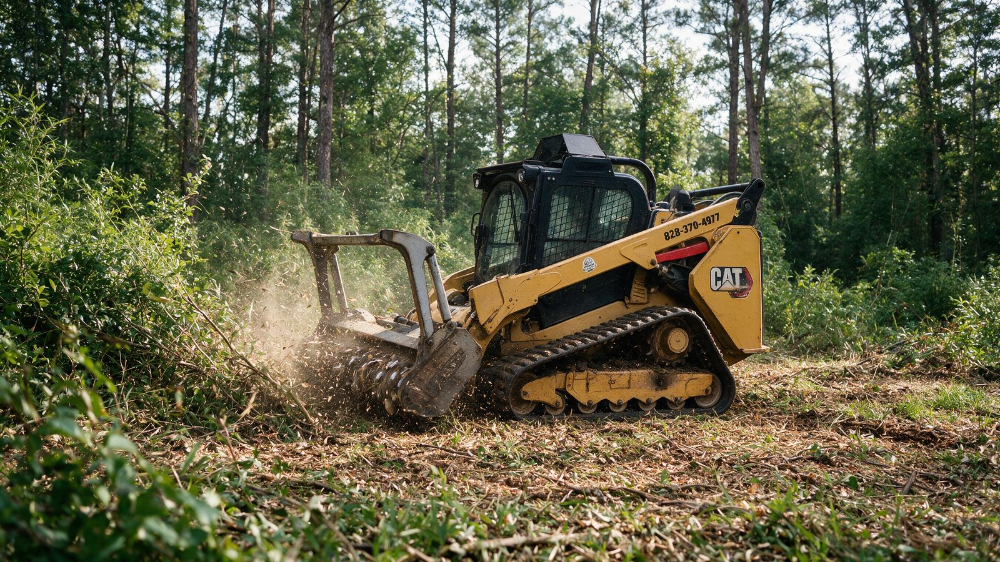
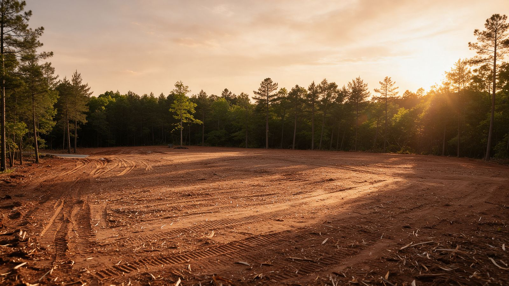

Land Clearing in Huntersville, NC
Huntersville has grown fast, but plenty of wooded lots are still waiting on a house, a pool, or a usable backyard. We clear home sites, acreage, and driveways from the Lake Norman side of town to the rural roads out toward Mountain Island Lake, keeping the hardwoods that make north Mecklenburg properties worth owning.
- Firm written pricing
- Keeper trees protected
- Builder-ready finish
Free Huntersville Land Clearing Estimate
Tell us about your lot. We'll call within one business day to schedule a walk-through.
Thanks, we've got it.
We'll review your property details and call you within one business day to schedule your walk-through.
Sorry, your request didn't go through. Please call (828) 576-3931 or email patrick@landclearingcharlotte.com.
- Owner on Every JobThe person who quotes it runs it
- Licensed & InsuredCertificates provided on request
- Free On-Site EstimatesFirm written scope, no surprises
- Minutes Up I-77Regular work in north Mecklenburg
What Our Land Clearing Process Is in Huntersville
Four steps, start to finish, so you know what's happening on your Huntersville lot before a machine shows up.
-
01
Walk the Lot
Lines, keeper trees, slopes, drainage, and any Town or HOA requirements.
-
02
Written Price
What's cleared, what stays, the finish, and the date.
-
03
Clear
Tracked equipment, root zones protected, clay kept in place.
-
04
Hand-Off
Final walk so your builder or grader can start right away.
Where We Serve Near Huntersville
Huntersville is one of the towns we work in every week. We also clear land across Charlotte and these nearby communities.
Clearing Land in Huntersville the Right Way
Home Sites on Huntersville's Remaining Wooded Lots
Most new neighborhoods in Huntersville were built on former farmland and woods, and the lots left between them are often the best pieces of ground in town: mature oaks and poplars, gentle slopes, and room to build. Whether it's an infill lot off Gilead Road or a few acres near Hambright Road, we clear just the building envelope, driveway, and yard area your builder needs and leave the rest of the canopy standing.
Lake Norman & Mountain Island Lake Properties
Huntersville sits between two lakes, and properties on the western side of town drain toward Mountain Island Lake, a drinking water source for the region. Lots near the water or along creeks feeding the lakes often have buffer requirements that limit how close to the water you can clear. We'll point out the creeks and slopes we see on your property during the walk-through and recommend confirming buffer limits with Mecklenburg County before any work near the water.
Acreage Out Toward Beatties Ford Road
The western and northern edges of Huntersville still have real acreage, the kind of tracts where people want a homestead, a horse pasture, or a long private driveway through the trees. We clear these in phases: drive and house site first, then pasture or yard as your budget allows, with tree lines left for privacy from the road.
Town Rules & HOA Approvals
Huntersville has its own planning and zoning ordinance, including tree preservation and buffer requirements that can apply to development and some residential projects, and many neighborhoods such as Skybrook and Vermillion have HOA architectural review. North Carolina also requires an erosion and sedimentation control plan for most disturbances over one acre. We'll flag what we see, but confirm the requirements for your lot with the Town of Huntersville and your HOA before clearing starts.
Red Clay & Wet Weather
North Mecklenburg clay gets slick and soft after a good rain, and a heavy machine on wet ground leaves ruts that cost money to fix. We use low ground-pressure tracked equipment, watch the forecast, and wait out saturated ground rather than tear up your lot to stay on schedule.

Building in Huntersville?
Send us your lot address or plat. We'll walk it with you and tell you exactly what it needs.
Start My EstimateOther Services We Provide in Huntersville
Every service we offer in Huntersville, grouped by category. Each group starts with its main service, followed by its specialty services.
Why Huntersville Homeowners & Builders Choose Us
Owner-Run, Start to Finish
One point of contact from the walk-through to the final hand-off.
Canopy Kept Where It Counts
We clear the building envelope and protect the mature hardwoods that add value to north Mecklenburg lots.
Builder & HOA Ready
Clear to the plan, coordinate with your builder, and provide insurance paperwork your HOA may ask for.
Huntersville property owners care about what's left standing as much as what comes down. We take the time to understand your plans, your lot, and the rules that apply to it, then clear exactly what's needed and nothing more.
Huntersville Land Clearing FAQs
Do I need Town approval to clear my lot in Huntersville?
It depends on the project. Huntersville has its own zoning ordinance with tree preservation and buffer requirements that can apply, and disturbing more than one acre generally needs an erosion control plan. Check with the Town of Huntersville planning department for your specific lot.
Can you clear a lot near Lake Norman or Mountain Island Lake?
Yes, but lakefront and creek-side lots often have buffers where clearing is restricted. We'll identify the water features during the walk-through and recommend confirming the buffer rules with Mecklenburg County before we start.
My HOA needs to approve tree removal. Can you help?
We can mark the clearing limits and keeper trees during the walk-through so you have a clear plan to submit to your HOA, and we'll provide our insurance certificate if the board requests one.
How far in advance should I book land clearing in Huntersville?
Most Huntersville jobs are scheduled one to two weeks after approval. If you're working around a builder's start date or a closing, call early so we can lock in your spot.
Can you clear just a pool or backyard area in an existing neighborhood?
Yes. Many Huntersville backyards back up to woods. We clear just the area you need, with access planned to protect your lawn, driveway, and irrigation.
What do you do with the trees after clearing a Huntersville lot?
Most material is mulched in place. When a bare, clean site is needed for construction, removal is built into your written scope so there are no surprises.
Do you clear acreage on the west side of Huntersville?
Yes. We regularly clear multi-acre tracts for home sites, driveways, and pasture, and phase the work so you can spread out the cost.
How much does land clearing cost in Huntersville?
Price depends on acreage, how dense the woods are, tree size, slope, and finish. We give a firm written number after walking the property with you, at no cost.
Ready to clear your Huntersville lot?
Free on-site walk-through and a firm written price.